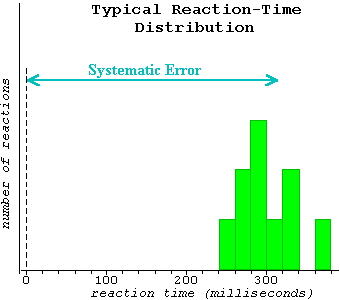

Now that the trials are complete, let's see how you did. (If you did not complete all ten trials on Page 1 or did not click the Analyze button after completing the trials, please do so now.)
The table on the left lists your ten reaction times and their mean, all in milliseconds. Plot your reaction times in a bar diagram like the one below. You may want to choose a different bin width.
The author, while testing out the program, came up with data that, when graphed, looked like this:

If you plotted your data like this, chances are they would look similar.
The reaction time is a composite of the amount of time it takes for your eyes to tell your brain the square has changed, then for your brain to tell your finger to click the button.
The reaction time is always positive. Thus, if the computer had recorded the duration of the time interval during which the square stays yellow (time between two button clicks), this value would always be larger than the actual duration by an amount equal to the reaction time.
This systematic tendency, when measuring a time interval, for recording a value that is too large is called systematic error. Suppose your goal were to measure the actual time duration while the square stays yellow. The systematic error in measuring this time interval would be well represented by the mean of the reaction times.
The ten reaction times are not all the same, but scatter around their mean. The amount of this scatter would be a measure of the random error inherent in measuring the actual time interval during which the square stays yellow. (Be careful -- don't confuse the scatter in the reaction times with the randomness in the actual times. The two are unrelated.)
Next we'll look at a more practical example of systematic error at work.